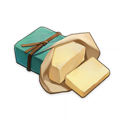

Materials
Butter
Butter
Food and Potions
Cooking Ingredient
An extract from milk. With the appropriate application, it can bring rich aromas to even the most basic ingredients.
An extract from milk. With the appropriate application, it can bring rich aromas to even the most basic ingredients.